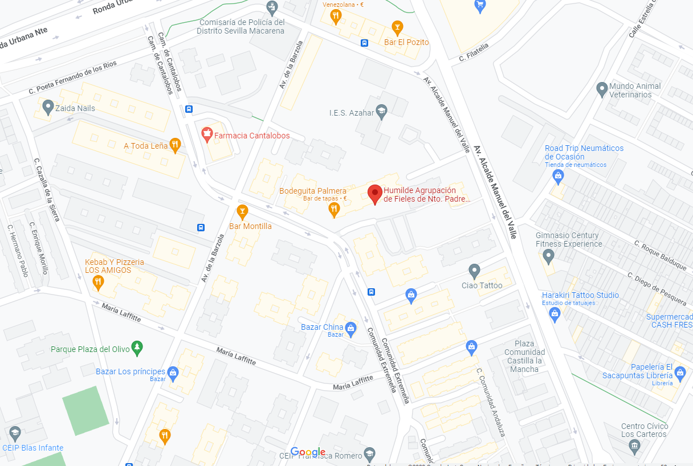

Nuestra Agrupación de Fieles
Fundación: Esta Agrupación de Fieles fue fundada en el año 2003 por un grupo de amigos.
Los estatutos de la misma fueron aprobados en enero de 2004 y después de los grandes esfuerzos realizados por parte de los promotores de esta idea y de todos los que creyeron en ella, ese mismo año, sábado 23 de Octubre de 2004, procesionaria por primera vez por las calles de su barrio y alrededores Ntro. Padre Jesús de la Caridad en su Tercera Caída.
El paso de Cristo se adquiere por la compra a la Hermandad del Polígono de San Pablo de Sevilla y la banda de cornetas y tambores que lo acompañaría sería Presentación al Pueblo de Dos Hermanas.
¿Cómo nace la idea?: El promotor de dicha idea es D. Moisés Peña Martínez, quien siguiendo los pasos anteriores de su hermano mayor Vicente Peña, fundador de la Cruz de Mayo de la misma barriada en 1987 y posteriormente del paso de la Amargura de Los Príncipes en 1989. Éste reunió a cinco amigos para aventura. Una vez aprobada la idea, decidieron hablar con Vicente Peña para que se uniese a ellos, pero éste debido a sus compromisos le fue imposible sumarse a dicho proyecto y les advirtió de tan difícil tarea y de las dificultades que se encontrarían a lo largo del camino. Vicente se ofreció para ayudarles en todo lo que estuviese en su mano.
Fundadores: La fundan seis amigos; Moisés Peña Martínez, Raúl Jiménez Peña, Alberto Manuel Zapata Gómez, Marcos Martínez Fuentes, Ángel Montes Bernal y Manuel Jesús Montes Bernal.
Juntas Directivas: En la actualidad, la Humilde Agrupación de Fieles está regida por la cuarta Junta Directiva que se hace cargo de la misma. Aquí queremos reseñar y darle las gracias por su esfuerzo y compromiso a las anteriores Juntas Directivas a través de sus Presidentes: 1º D. Moisés Peña Martínez, 2º D. Emilio José González Ríos, 3º D. Agustín Torremocha Martín y 4º D. Manuel Rodríguez Borreguero.
JUNTA DIRECTIVA ACTUAL
Dirección Humilde Agrupación de Fieles:
Bda. Los Príncipes, Parcela 4, Bloque 3, Local 1. (Referencia: C/ Camino de Cantalobos).

Desde el año 2013, un objetivo marcado desde el corazón de esta Agrupación de Fieles no era otro que la de desempeñar una Acción Social a la altura del barrio donde nos encontramos. Viendo las necesidades patentes de las familias que nos venían a pedir ayuda, decidimos apostar por conseguir que la Fundación Banco de Alimentos de Sevilla se fijase en nosotros como una asociación seria, rigurosa y comprometida con los criterios de evaluación de las familias a ayudar.
En 2014 ellos así lo entendieron y nos aceptaron como Entidad Colaboradora. Desde entonces se comienza a correr la voz de que hay una asociación en el barrio que se dedica a ayudar a familias sin recursos.
Seleccionamos familias del barrio con la ayuda inconmensurable de las trabajadoras sociales de dos centros públicos de educación obligatoria, que no disponen de ningún recurso o escasean de los mismos y los ayudamos con una entrega mensual de alimentos no perecederos.
Siempre es escasa la ayuda, pero no nos queda otra que ejercer la caridad en un barrio tan desolado como en el que nos encontramos.
Es muy recurrente aportar momentos fotográficos que avalan esta labor (los tenemos), pero preferimos obviarlos para preservar el derecho a la intimidad que tienen las familias. Bastante calamidad y vergüenza pasan a la hora de pedir para que encima las tengamos reflejadas públicamente.
Pulse aquí para descargar el formulario de hermano
Facebook: Caridad y Desconsuelo de los Príncipes
Twitter: @Caridad_Descons
Instagram: caridadydesconsuelo
YouTube: Caridad Desconsuelo
E-mail: caridadydesconsuelosprincipes@gmail.com